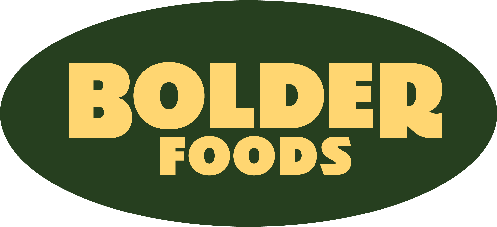

← The Hive

Insights
Supplier, carrier, and operational performance — at a glance.
Scorecards & Reports
📊
Supplier Scorecard
Five-metric performance ratings across all active suppliers. Green/Yellow/Red grading on delivery, quality, compliance, and responsiveness.
Procurement
Quality
🚚
Outbound Freight Score
Weekly carrier performance tracking. On-time delivery, cost variance, and exception rates by lane and carrier.
Logistics
Weekly